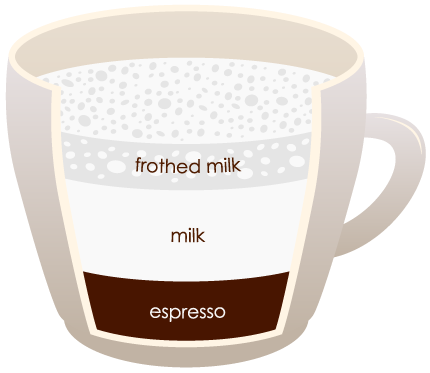
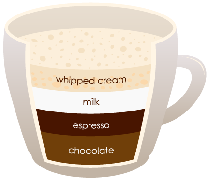
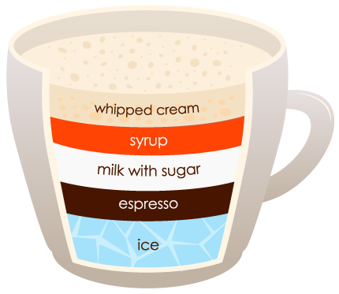
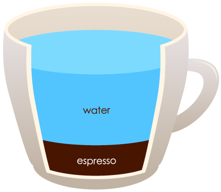

Coffee is that one beverage which is the most consumed around the world, after water. The fact that it comes with so many options and flexibility in brewing techniques makes it so popular among people. You could enjoy a plain coffee equally as a frappuccino or even make a combination of ice cream with coffee. You could have a cup of espresso every morning which might suit your taste buds but there are also other ways enjoying coffee that we will share with you in great detail in this article. Everything you need to know about the different types of coffee is right here and you are at the right place. At the end of it you will be able to differentiate well between different types of coffee and you will no more be confused about which coffee to order next time you are at your local coffee shop.

Types of Coffee
The two reasons why two different types of coffee tastes different is because of the difference in their brewing method and the way the coffee beans are grounded. There are different ways of brewing coffee that gives it its distinct flavour and smell. Here is a list of 13 of the most popular coffee drinks out there, that we are sure you have heard of:
Espresso

Latte
Mocha
Macchiato

Frapuchino
Americano
